Back
Sharing Data
Sharing berasal dari kata share yang artinya berbagi atau saling menukar sesuatu, sharing
diartikan dengan berbagi cerita atau saling memberikan sesuatu sedangkan sharing dalam
pengertian
jaringan artinya saling berbagi data antara beberapa komputer yang saling terhubung satu sama
lain
melalui jaringan sehingga komputer yang satu dapat mengakses dan menggunakan sumber daya yang
terdapat
pada komputer tersebut.
Pada kesempatan kali ini, kita akan mensharing data menggunakan Virtual Box dengan
menggunakan
sistem operasi Linux sebagai server nya dan Windows sebagai client nya.
Distro linux yang dipakai adalah Ubuntu Server 18.04 dan Windows yang dipakai adalah
Windows 7. Kita juga akan memakai Filezilla sebagai mengupload atau mengambil data
dari
komputer server yang telah kita buat, dan kita juga memakai PuTTY sebagai emulator
terminal SSH.
Preresquite
Ubuntu Server 18.04Windows 7
Filezilla
PuTTY
Install Ubuntu Server
1. Membuat Virtual Machine
Install Virtual Box yang sudah di download, lalu klik install dan tunggu sampai proses
installasi selesai. Setelah proses installasi selesai, maka buat Virtual Machine baru
dengan cara
memilih tombol yang di sudut kiri atas yang bertuliskan New. Lalu tuliskan nama sistem
operasi nya serta tipe dan versi nya.
Kalian bisa mengikuti gambar di bawah ini.

2. Tahap Pemilihan Memory dan Hardisk
Pada tahap ini, kalian bisa memilih alokasi memory pada Virtual Machine untuk sistem
operasi
Ubuntu Server kalian bisa mengikuti sesuai rekomendasi Virtual Box atau kalian
bisa
mengalokasikan nya sesuai keinginan kalian. Begitu juga dengan alokasian hardisk, kalian bisa
mengikuti
Virtual Box atau kalian bisa mengalokasikan nya sendiri. Saya memilih untuk mengikuti
saran dari
Virtual Box. Setelah itu pilih create untuk melanjutkan proses nya.

3. Pemilihan Penyimpanan Hardisk
Pada tahap ini kalian akan memilih tipe dari hardisk yang akan di install Ubuntu Server, ada 3 pilihan untuk tipe hardisk nya.
- VDI (Virtual Disk Image)
- VHD (Virtual Hard Disk)
- VMDK (Virtual Machine Disk)

4. Pemilihan ISO Ubuntu Server
Setelah Virtual Machine sudah dibuat, maka tahap selanjutnya pemilihan ISO dari sistem
operasi yang akan di install. Klik nama Virtual Machine nya yaitu Ubuntu Server lalu
pilih settings
yang berada di atas. Lalu akan muncul beberapa menu, pilih bagian menu Storage, lalu klik icon
CD yang bertuliskan Empty
Lalu klik icon CD yang berada di tulisan Optical Drive dan pilih Choose Virtual Optical Disk
File
Pilih ISO dari Ubuntu Server yang sudah di unduh, lalu klik OK.

5 Start Virtual Machine
Setelah melakukan start pada Virtual Box maka tunggu proses booting nya, setelah proses booting
selesai
Ubuntu Server akan meminta kita untuk memilih bahasa yang digunakan. Pada tahap ini kita gunakan
bahasa inggris
dikarenakan bahasa indonesia belum didukung. Selanjutnya tekan enter pada keyboard, maka masuk
ke tahap selanjutnya.
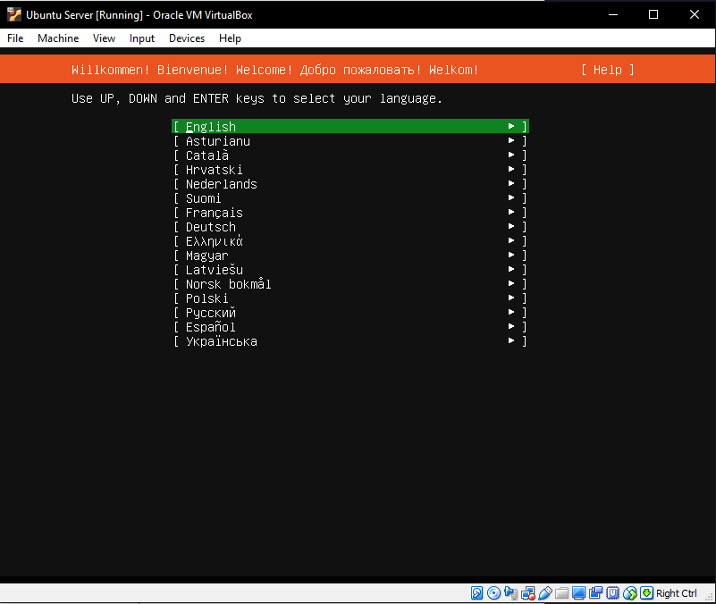
5.1 Install Ubuntu Server
Pada menu ini, tekan enter pada keyboard untuk masuk ke tahap selanjutnya, pada tahap ini kita
mengkonfirmasi
kalau keyboard yang kita gunakan berlayout English US.
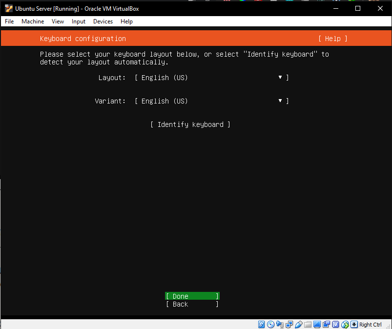
Selanjutnya masuk ke pilihan network, disini kita pilih default saja tidak usah diubah, karena
server
yang dibuat kali ini hanya simulasi saja.
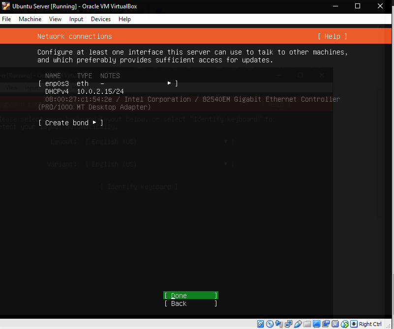
Pada tahap selanjutnya kita masuk ke tahap pemilihan proxy server, kalau kalian mempunyai proxy
server
bisa di tulis, tetapi pada tahap ini kita tidak menggunakan proxy server. Kita hanya menggunakan
default dari
Ubuntu nya saja. Kalau sudah tekan enter pada tahap selanjutnya.
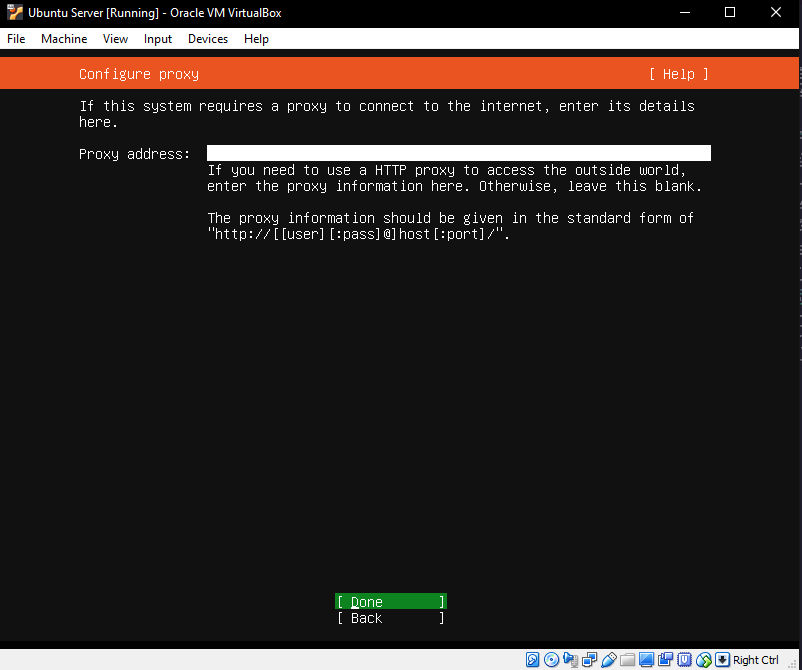
Pada tahap selanjutnya kita memilih mirror address untuk package Ubuntu Server,disini kita
menggunakan
mirror default dari Ubuntu berikan, selanjutnya tekan enter pada keyboard dan masuk ke tahap
selanjutnya.
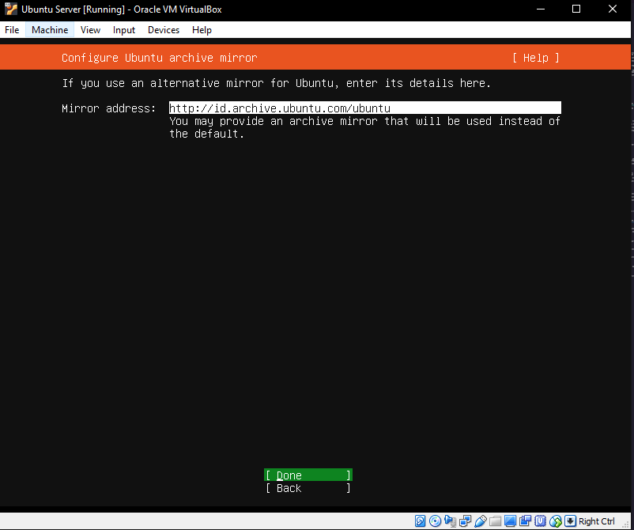
Pada tahap ini kita akan menginstall Ubuntu Server, pilih entire disk yang artinya kita akan
memformat dan menggunakan
seluruh hardisk Virtual Box untuk menginstall Ubuntu Server. Setelah itu tekan enter pada
keyboard dan masuk ke tahap selanjutnya.
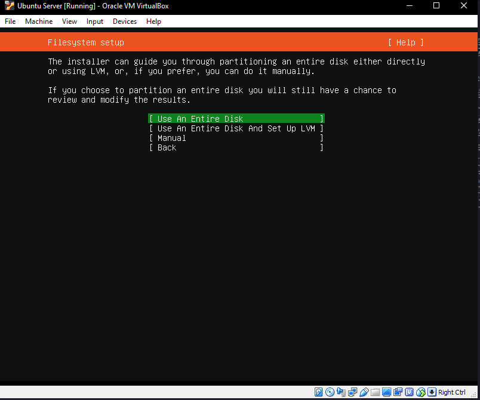
Pada tahap ini kita memasukkan username dan nama server kita, silahkkan masukkan nama server
kalian serta
password pada server kalian. Setelah selesai maka tekan enter untuk masuk ke tahap selanjutnya.
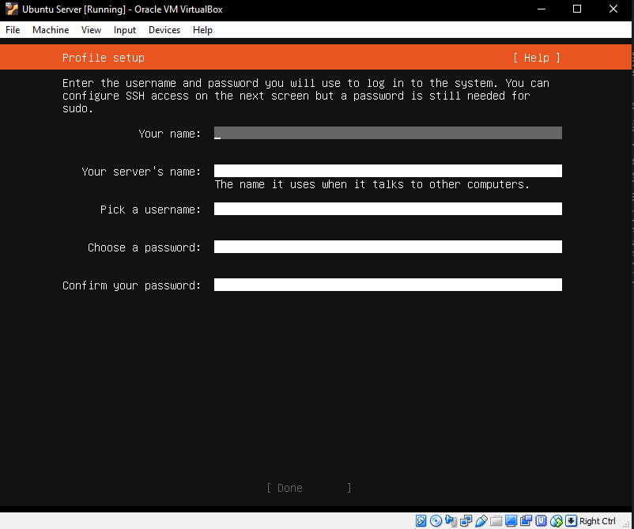
Pada tahap ini kita diminta untuk menginstall Open SSH, tidak usah di centang terlebih
dahulu, nanti di install
pada tahap selesai membuat server. Setelah itu klik enter dan masuk ke tahap selanjutnya.
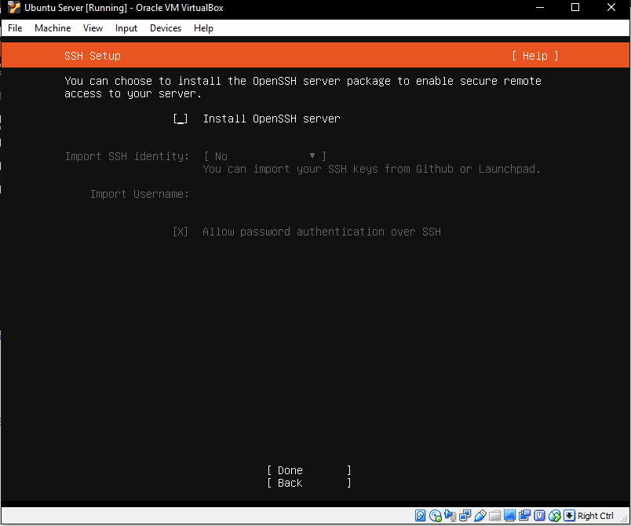
Pada tahap ini kita akan diminta untuk menginstall paket tambahan, tekan saja enter, pada
keyboard untuk masuk ke tahap selanjutnya
di tahap ini kita tidak menginstall paket tambahan yang disediakan oleh Ubuntu Server.
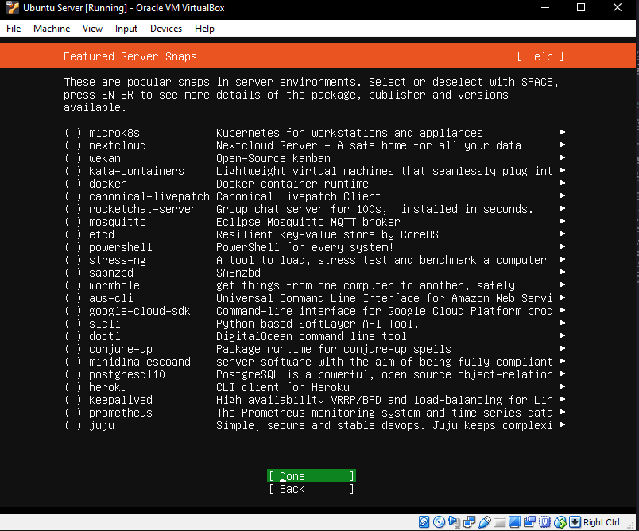
Setelah itu tunggu proses install sampai selesai, mungkin membutuhkan waktu beberapa menit
tergantung dari speed internet kalian masing masing, dikarenakan Ubuntu Server akan meminta
update package.

Install Windows
1. Membuat Virtual Machine
Sama seperti cara menginstall Ubuntu Server tadi, di buat dulu Virtual Machine beri nama virtual machine nya Windows 7 setelah itu klik next untuk masuk ke tahap selanjutnya
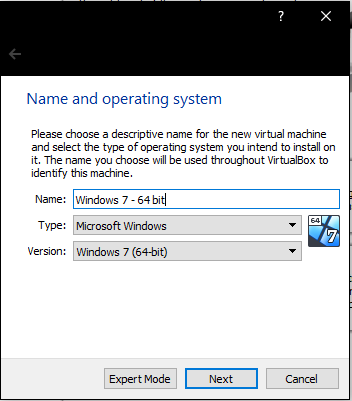2. Tahap Pemilihan Memory dan Hardisk
Pada tahap ini, kita harus memilih memory untuk sistem operasi yang kita buat,pilih saja nilai default nya seperti tahap menginstall Ubuntu Server setelah itu masuk ke tahap selanjutnya.
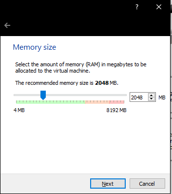3. Tahap Alokasi Penyimpanan
Pada tahap ini kita memilih alokasi untuk penyimpanan kita, silahkan ikut nilai default nya, kalau mau mengubah nya juga tidak apa apa, alokasikan berdasarkan penyimpanan hardisk kalian masing masing.
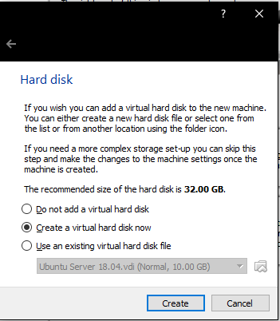4. Tahap Pemilihan CD Windows 7
Sama seperti tahap sebelumnya, masuk ke dalam setting virtual machine lalu pilih ISO Windows 7 yang sudah kalian download. Setelah itu pilih ISO nya dan silahkan booting Virtual Machine nya.
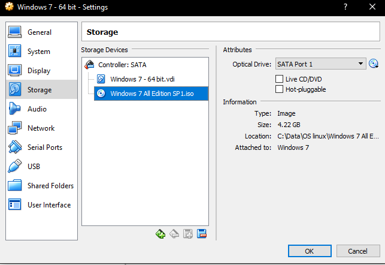5. Tahap Pemilihan Installasi Windows 7
Pada tahap ini silahkan klik tombol next, dan masuk ke tahap selanjutnya untuk penginstallan Windows 7. Untuk time and currency format dan keyboard, biarkan saja default dari sistem nya jangan diubah.
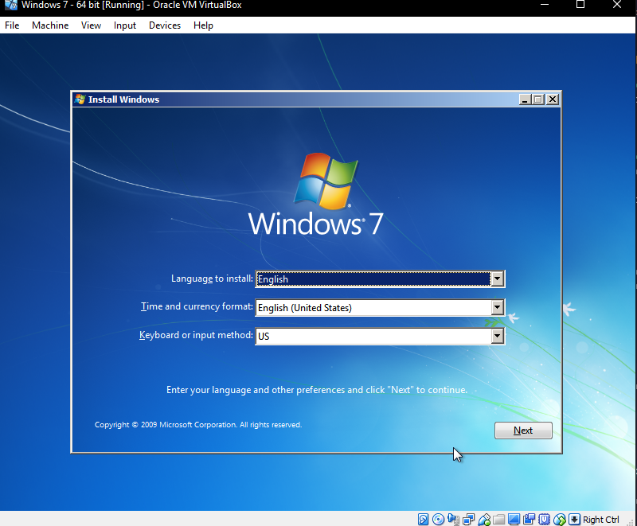6. Tahap Pemilihan Installasi Windows 7
Pada tahap ini silahkan klik tombol next, dan masuk ke tahap selanjutnya untuk penginstallan Windows 7. Untuk time and currency format dan keyboard, biarkan saja default dari sistem nya jangan diubah.
7. Tahap Pemilihan Penyimpanan
Pada tahap ini silahkan pilih penyimpanan virtual box yang sudah kalian buat, kalau sudah klik tombol next pada tahap installasi tersebut.
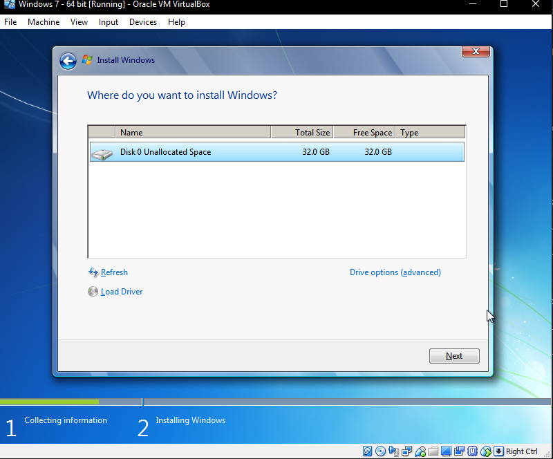8. Proses Install
Pada tahap ini Windows 7 lagi menginstall di dalam penyimpanan virtual, tunggu sampai proses installasi selesai. Kalau sudah silahkan jalankan kembali virtual machine nya.
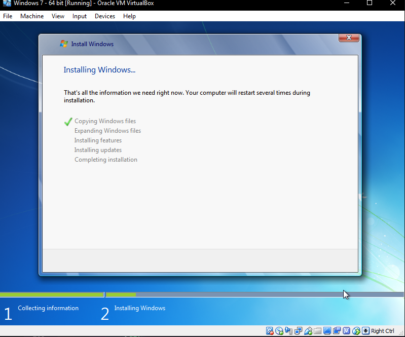9. Selesai
Install Windows 7 sudah selesai, saatnya kita masuk ke pengaturan sharing data. Jangan lupa di download file yang sudah diperlukan dan di install.
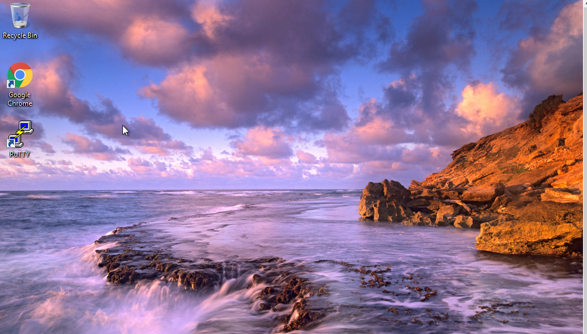Selasa 10 Maret, 2020
Setting Sharing Data
1. Setting Network
Pada tahap ini klik virtual machine kalian, lalu masuk ke menu network dan setting seperti di gambar bawah ini. Setting juga windows kalian seperti gambar di bawah ini.
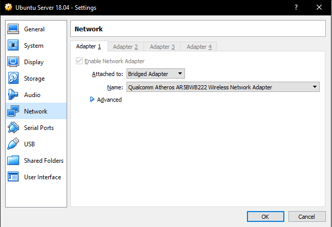2. Start Virtual Machine
Jalankan virtual machine kalian, Windows dan Ubuntu, sekaligus dua, setelah di jalankan coba cek
IP masing masing
dari windows dan ubuntu kalian
Windows:
ipconfig
Ubuntu:
ifconfig
3. Install Open SSH di linux
Tulis di terminal linux kalian, sudo apt install openssh-server untuk menginstall SSH pada server kalian, agar bisa dipakai oleh PuTTY.
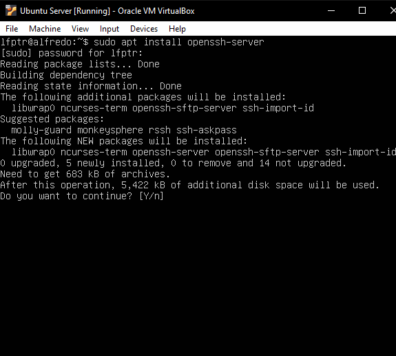4. SSH menggunakan Windows
Setelah menginstall SSH pada linux kalian masing masing, selanjutnya masuk ke windows dan jalankan PuTTY yang sudah di install. Pada Host Name, masukkan IP dari linxu kalian, dan port nya biarkan saja 22 jangan diubah. Setelah itu jalankan dan SSH meminta konfirmasi, tekan saja yes dan SSH akan meminta username dan password dari linux kalian. Masukkan username dan password linux kalian, dan tampilan nya seperti ini. Jika tampilan seperti gambar dibawah ini maka Linux sudah siap untuk mensharing data dengan windows kalian.
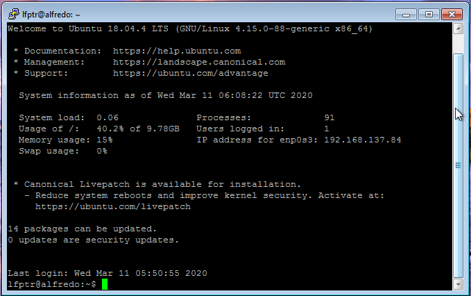5. Filezilla Windows
Setelah menginstall filezilla, selanjutnya buka filezilla kalian masing masing, isikan host dengan IP linux kalian username dengan username linux kalian dan password dengan password linux kalian masing masing, dan port nya isi dengan 22. Drag file yang ingin kalian sharing ke filezilla dan pastikan letakkan di folder Home. Kalau berhasil maka data yang di drag akan masuk seperti gambar di bawah ini
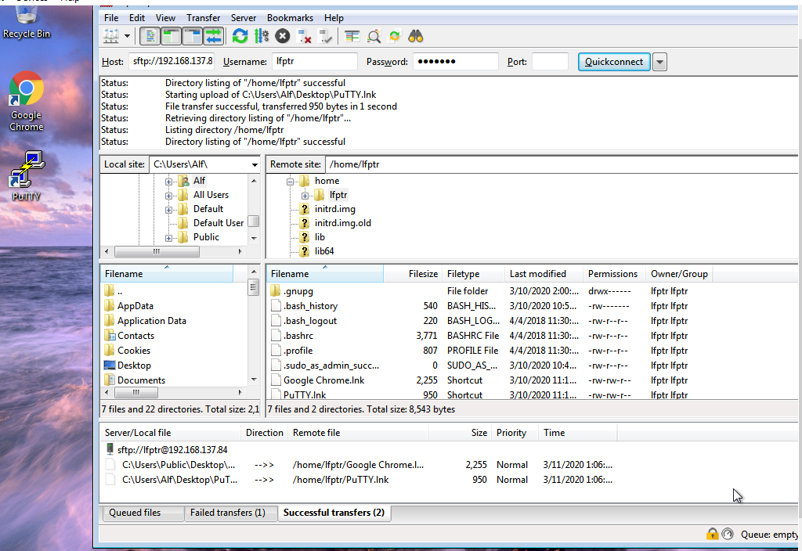Rabu 11 Maret, 2020